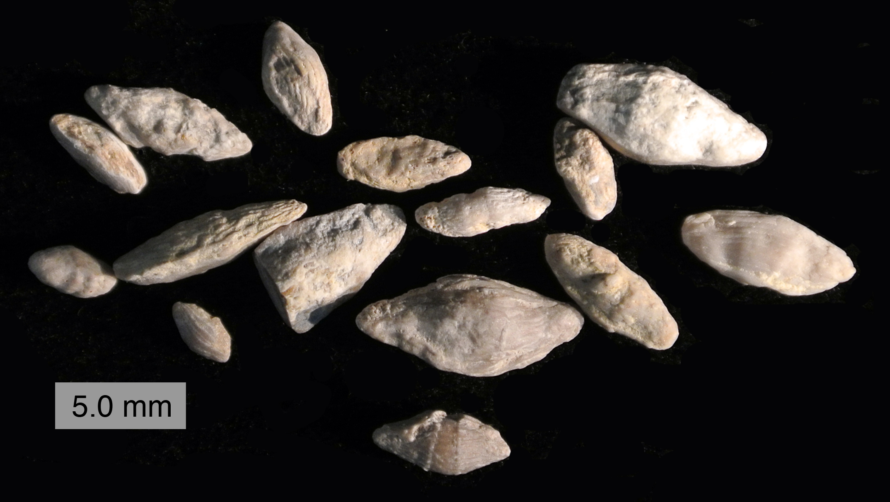
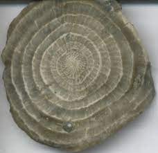

Kingdom Protozoa is comprized of single celled eukaryotes, that can either be free-living or parasitic, which consume organic matter such as other microorganisms or organic tissues and debris. Due to being heterotrophic, meaning they cannot create their own food, Protozoas were historically regarded as "single celled animals". However, in 1981 Protozoa was officially declared a kindom of its own.
Most fossils from this kingdom belong to the Phylum Foraminifera (Fusulinids). This is due to Fusulinids having external shells called "tests" that easily become fossils. Some examples are Fusulinida and Nummulites.
Fusulinida (Hole Bearer): Small marine organisms common between the Pennsylvanian and Permian Periods (315 million years ago - 250 million years ago). They became extinct during the mass extinction at the end of the Permian period. Single celled organisms the size of a grain of wheat, capable of locomotion, feeding, and digestion. Their shells were divided into three layers, the chamber, the furrow, and the antetheca.

Nummulites: Large rounded fossils characterised by numerous coils seperated into chambers by septa (thin walls between chambers). Despite being single celled, Nummulites can be several inches big in size. They get their name from the Latin word "Nummulus" meaning "coin" due to their round shape. Due to their calcium carbonate skeletons, they are generally found in limestone rocks. 